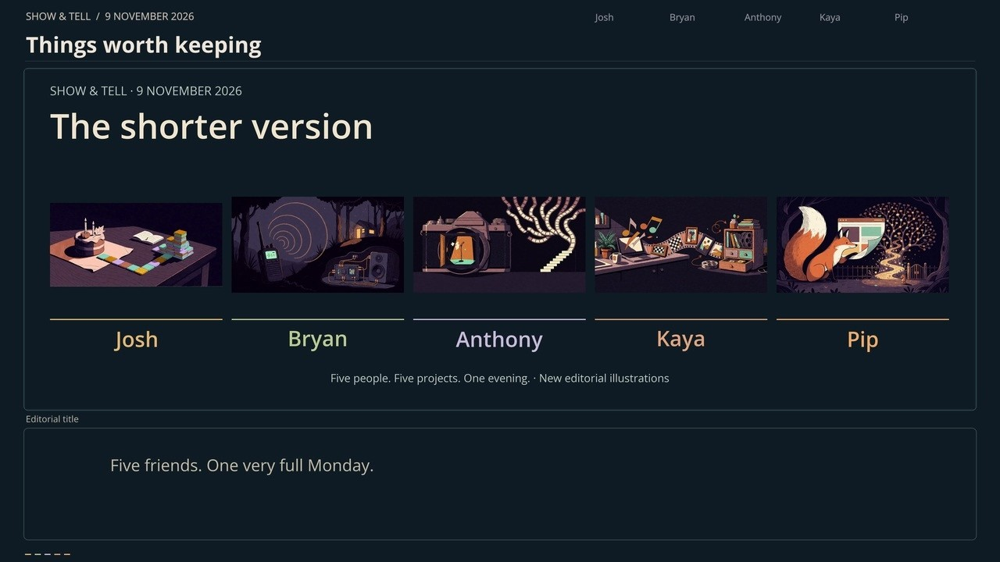
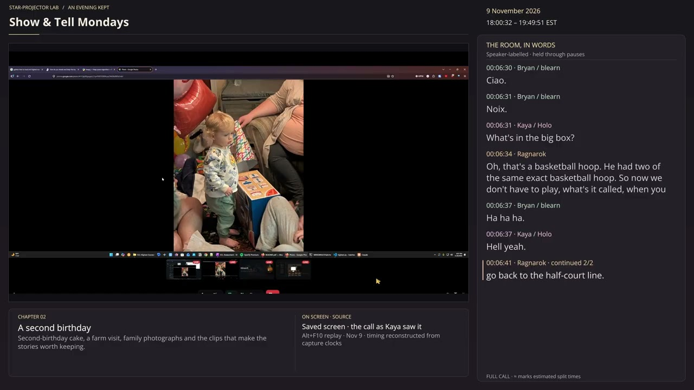
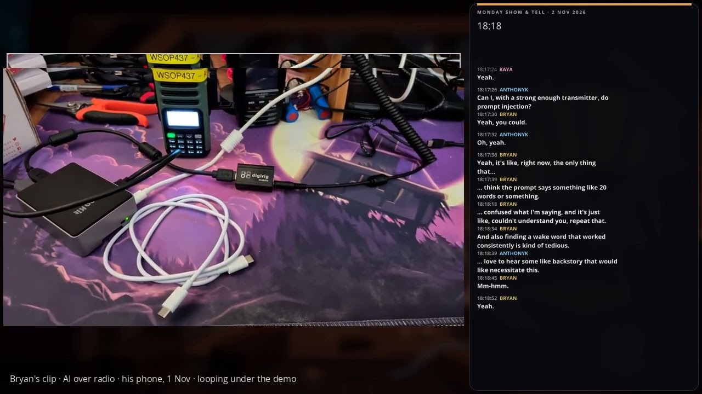

6:59The curated short film
Josh, Bryan, Anthony, Kaya and Pip bring things they care about, cut to the moments that carry it — the demos, the questions, the funny turns. The invitation to the whole thing.
Watch on YouTube ↗MONDAY NIGHTS · AN EVENING, KEPT
Friends bring things they care about — a radio that talks back, a game jam entry, a birthday cake, a question that won't let go. We keep the evenings: a curated highlights film, and the full reconstruction for anyone who wants to sit through the whole hang.



6:59Josh, Bryan, Anthony, Kaya and Pip bring things they care about, cut to the moments that carry it — the demos, the questions, the funny turns. The invitation to the whole thing.
Watch on YouTube ↗
1:49:19Bryan puts custom firmware on his HT; Kaya talks about YouTube caching and Pip's umwelt; Anthony shows off his l33t coding skills; Josh shares Ronan's second birthday. Assembled from microphone fragments, saved replay footage and context.
Watch on YouTube ↗
2:02:58Pip's reconstructed timeline of the Monday, from recordings and context — the evening that started the habit of keeping them.
Watch on YouTube ↗More evenings will appear here as they're kept. The 16 November film is finished but not yet uploaded.